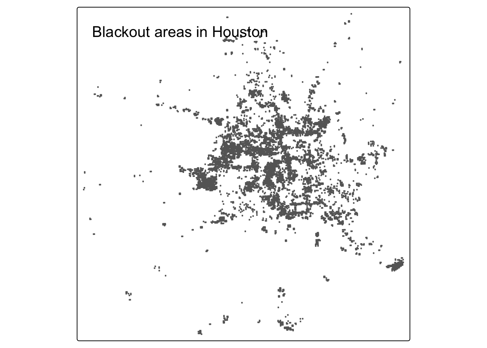
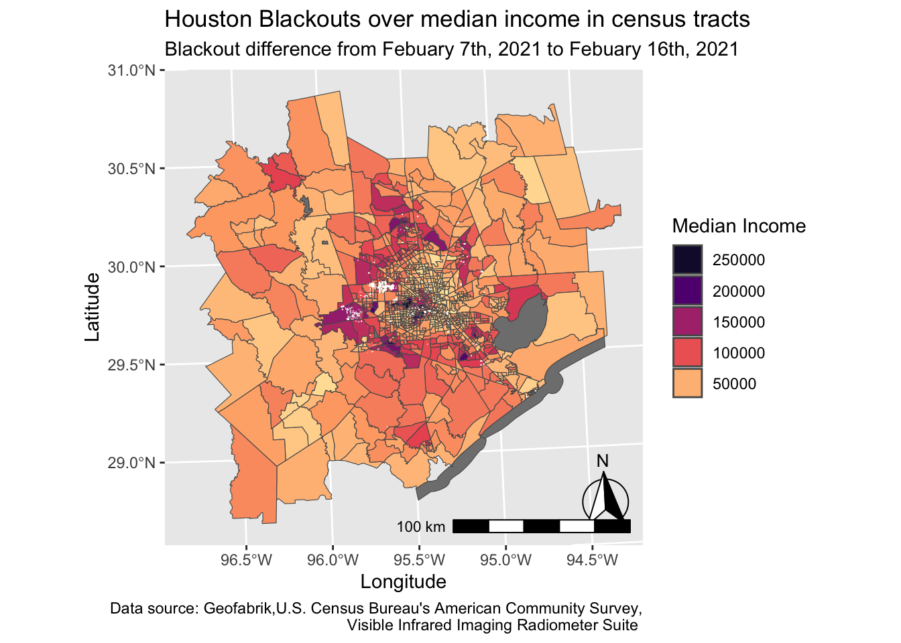
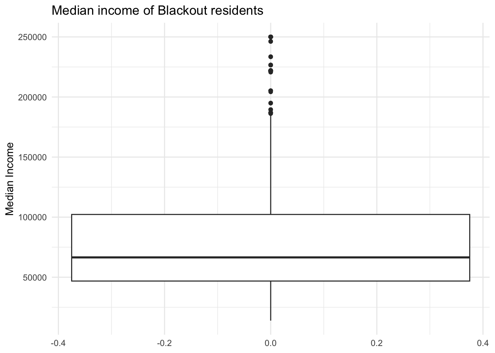

Quantifying Blackouts after Texas’ 2021 Winter Storm
Determining just how many houses in Houston, Texas lost power due to the 2021 storm
Geospatial
R
Raster data
Vector data
Published
December 12, 2023
Background
Houston, we have a problem.
“In February 2021, the state of Texas suffered a major power crisis, which came about as a result of three severe winter storms sweeping across the United States on February 10–11, 13–17, and 15–20.”1. Because Texas is on its own power grid, it was not able to easily get access to power from other states.Therefore, it felt the effects of this winter storm at a much more servere rate than neighboring states that were experiencing the same exact storm. Some buildings lost power for five days straight, affecting a total of 4 million Texans.
Overview
We will utilize a few different datasets to attempt to determine just how many buildings lost power in this storm. To classify the number of houses, we are going to use satelitte data from before/ during the outage. We will focus specifically on Houston. We will first estimate the number of homes in Houston that lost power due to the storm, and then will explore if socioeconomic factors are predictors of communities recovery from a power outage.
Data
Night lights data
We will sse NASA’s Worldview to explore the data around the day of the storm. There are several days with too much cloud cover to be useful, but 2021-02-07 and 2021-02-16 provide two clear, contrasting images to visualize the extent of the power outage in Texas.We will utilize VIIRS data, which is distributed through NASA’s Level-1 and Atmospheric Archive & Distribution System Distributed Active Archive Center (LAADS DAAC). Many NASA Earth data products are distributed in 10x10 degree tiles in sinusoidal equal-area projection. Tiles are identified by their horizontal and vertical position in the grid. Houston lies on the border of tiles h08v05 and h08v06. We therefore need to download two tiles per date. We will utilize datasets that were previously prepped and cleaned, however, we will still need to join the two tiles that cover Houston.
VNP46A1.A2021038.h08v05.001.2021039064328.h5.tif: tile h08v05, collected on 2021-02-07
VNP46A1.A2021038.h08v06.001.2021039064329.h5.tif: tile h08v06, collected on 2021-02-07
VNP46A1.A2021047.h08v05.001.2021048091106.h5.tif: tile h08v05, collected on 2021-02-16
VNP46A1.A2021047.h08v06.001.2021048091105.h5.tif: tile h08v06, collected on 2021-02-16
Road data
To prevent misrepresenting roads as building lights, we will utilize this road dataset. OpenStreetMap (OSM) is a collaborative project which creates publicly available geographic data of the world. Ingesting this data into a database where it can be subsetted and processed is a large undertaking. Fortunately, third party companies redistribute OSM data. We used a prepared Geopackage containing just the subset of roads that intersect the Houston metropolitan area that got the data from Geofabrik’s download sites.
gis_osm_roads_free_1.gpkg
House data
We can also obtain building data from OpenStreetMap to quantiy where the houses in Houston are. We again will be using a preloaded package containing only houses in the Houston metropolitan area,with data coming from Geofabrick.
gis_osm_buildings_a_free_1.gpkg
Socioeconomic data
We cannot readily get socioeconomic information for every home, so instead we obtained data from the U.S. Census Bureau’s American Community Survey for census tracts in 2019. The folderACS_2019_5YR_TRACT_48.gdb is an ArcGIS “file geodatabase”, a multi-file proprietary format that’s roughly analogous to a GeoPackage file. Each layer of the geodatabase contains a subset of the fields documents in the ACS metadata. The geodatabase contains a layer holding the geometry information, separate from the layers holding the ACS attributes.Looking ahead, we will need to combine the geometry with the attributes to get a feature layer that sf can use.
Analysis
Load necessary packages and data
Code
#load night light datah08v05_07 <-read_stars("data/VNP46A1/VNP46A1.A2021038.h08v05.001.2021039064328.tif") # load in data using starsh08v06_07 <-read_stars("data/VNP46A1/VNP46A1.A2021038.h08v06.001.2021039064329.tif")h08v05_16 <-read_stars("data/VNP46A1/VNP46A1.A2021047.h08v05.001.2021048091106.tif")h08v06_16 <-read_stars("data/VNP46A1/VNP46A1.A2021047.h08v06.001.2021048091105.tif")#load in highway data using a query to select only highwaysquery <-"SELECT * FROM gis_osm_roads_free_1 WHERE fclass='motorway'"# select only motorwayshighways <-st_read("data/gis_osm_roads_free_1.gpkg", query = query) # read in data using query#load in building data using a query to select only houses query <-"SELECT * FROM gis_osm_buildings_a_free_1 WHERE type in ('residential', 'apartments', 'house', 'static_caravan', 'detached')"# query to select only housing related buidlings buildings <-st_read("data/gis_osm_buildings_a_free_1.gpkg", query = query) # load in data using query#load in socioeconomic dataacs_geoms <-st_read("data/ACS_2019_5YR_TRACT_48_TEXAS.gdb", layer ="ACS_2019_5YR_TRACT_48_TEXAS") # read in tract layer with geometries
Find locations of blackouts
Let’s first explore the effect the storm had on all of Houston in terms of outages. We will classify any drop of more than 200 nW cm-2sr-1 to be considered a blackout. As mentioned in the data section, we first need to combine the two tiles for each storm for the Houston area. We can do this using st_mosaic.
Code
night_lights_07 <-st_mosaic(h08v05_07,h08v06_07) # join together two tiles for each daynight_lights_16 <-st_mosaic(h08v05_16,h08v06_16)
Code
blackout <- (night_lights_07 - night_lights_16) >200# find difference between feb 7th and feb 16th and select anything greater than 200blackout[blackout ==FALSE] <-NA# assign NA to all locations that experienced a drop of less than 200
In order to visualize the difference in lights before and after the storm , we need to vectorize the blackout mask. Once we have vecotrized the mask, we can crop it to the Houston Metropolitan area we are intersted in using the following coordinates: (-96.5, 29), (-96.5, 30.5), (-94.5, 30.5), (-94.5, 29). For this analysis, we will use the EPSG:3083 (NAD83 / Texas Centric Albers Equal Area) crs.
Code
blackout_vec <-st_as_sf(blackout) %>%st_make_valid() #make blackout mask a vector and fix invalid geometries
Code
st_crs(blackout_vec) # check crs of blackout_vec to know which crs to assign to houston metro area
Code
houston_metro_area <-st_as_sfc(st_bbox(c(xmin =-96.5, ymin =29, xmax =-94.5, ymax =30.5 ), crs =4326)) # create bounding box and assign crs 4326houston_metro_area_st <-st_sfc(houston_metro_area, crs =4326) # make sf objectblackout_houston <- blackout_vec[houston_metro_area_st,] # crop blackout_vec to houston coordinatesblackout_houston_3083 <-st_transform(blackout_houston, "EPSG: 3083") # change crs to 3083tmap_mode("plot") map =tm_shape(blackout_houston_3083) +tm_polygons() +tm_layout(title ="Blackout areas in Houston") # plot blackout map #object.size(map)map

Exclude highways from blackout mask
We will now utilize the highway data we loaded in. Since we ultimately want to exclude highways so that we are not including them as houses to be counted, we can create a buffer of 200 meters from all highways and then disjoin the buffer and the previous vectorized blackout data to exclude the buffered area. Therefore, we will only be including houses that are at least 200 meters away from a highway. As a reminder, we are going to use EPSG:3083 (NAD83 / Texas Centric Albers Equal Area) for all areas of interest in this analysis.
Code
#self check to make sure motorway is only type of freeway, if only one unique value then query was done correctly unique(highways$fclass)
[1] "motorway"
Code
highways_geometry <- highways$geom # pick out highway geometries highways_geometry <-st_transform(highways_geometry, "EPSG: 3083") # transform highway to have crs 3083highway_200m <-st_buffer(highways_geometry, dist =200) %>%st_union() # create buffer of 200 meters and use st_union to dissolve them#find areas that experienced blackouts that are further than 200 meters from a highwayhighway_mask <- blackout_houston_3083[highway_200m, , op = st_disjoint]#self check, highway should have less obs than blackout_houston_3038 because we are excluding obsnrow(highway_mask) <nrow(blackout_houston_3083)
[1] TRUE
Find homes impacted by blackouts
We will now utilize the building data we loaded in. We will do so by filtering to areas in our most recent highway_mask vector. Doing so will give us the buildings in Houston that experienced a drop of more than 200 nW cm-2sr-1 in areas that are farther than 200 meteres from a highway. We can get the number of houses simply by counting the number of rows in our newly filtered buildings vector.
Code
buildings<-st_transform(buildings, 3083) # transform building data to have crs of 3083buildings_st <-st_as_sf(buildings) # make buildings sf object
Code
outage_houses <- buildings_st[highway_mask, drop =FALSE] # find number of buildings in highway mask to exclude areas near highwaysnumb_of_houses <-nrow(outage_houses) # couunt number of buildings by using nrowprint(paste0(numb_of_houses, " houses experienced a blackout."))
[1] "20779 houses experienced a blackout."
Investigate socioeconomic factors
We will now use the acs data to see if there is any relationship between blackout areas and different socioecnomic factors. Specifically, we will look to see if the outages were at all related to the median income. In the acs data, the median income field is stored in the ACS_2019_5YR_TRACT_48_TEXAS layer and denoted by B19013e1.
Code
acs_geoms <-st_transform(acs_geoms, crs ="EPSG:3038") # transform crs to 3083acs_income <-st_read("data/ACS_2019_5YR_TRACT_48_TEXAS.gdb", layer ="X19_INCOME") # read in income layermedian_income <- acs_income %>%select( "B19013e1") # select median income fieldhead(median_income) #make sure data frame has correct column
In order to see how outage and median income were related, we first need to get the census tract geometries to be in our area of interest. We can do this by first filtering the acs data to the size of the houston metropolitan area we are looking at. We will create an object called acs_houston, that will have the different levels of socioecnomic factors for Houston metropolitan area.
Code
acs <-left_join(acs_geoms, acs_income, by =c("GEOID_Data"="GEOID")) # join geometry census data with income census data acs <-st_transform(acs, 3083) # transform crs to 3083#self check to make sure joined properly, shoud have length of columns of acs_geoms + length of columns of acs_income - 1 for their shared columnlength(acs_geoms) +length(acs_income) -1==length(acs)
[1] TRUE
Code
#find acs data for just houston for mapping purposes # houston bbox: houston_metro_area_st ( crs = 4326 so need to change)houston_3083 <-st_transform(houston_metro_area_st, crs ="EPSG: 3083") # change crs to 3083acs_houston <- acs[houston_3083,] #select acs census data in houston
Is median income related to outages?
Now that we are looking at data within Houston, we can create a map of the median income by census tract. Doing so will also us to visually see if there is a relationship between income and blackout outage experience. We will create a map that shows the median incomes for different census tracts in Houston, and then plot the outage areas on top of this map.
Code
ggplot()+geom_sf(data = acs_houston, aes(fill = B19013e1))+# add census income data for houstonlabs(fill ='Median Income', x ='Longitude', y ='Latitude')+# label plotsgeom_sf(data = outage_houses, color=alpha("white",0.2))+# add house outages on top of median incomescale_fill_viridis_c(option ="magma",begin =0.1, trans ="reverse")+#reverse color scale to have darker values be higher incomesguides(fill =guide_legend(reverse =TRUE))+# reverse order of legendannotation_north_arrow(location ="br", which_north ="true", #add north arrow in bottom rightpad_x =unit(0.0, "in"), pad_y =unit(0.1, "in"),style = north_arrow_fancy_orienteering)+annotation_scale(location ="br", width_hint =0.4)+# add scale bar in bottom right labs(title ="Houston Blackouts over median income in census tracts",subtitle ="Blackout difference from Febuary 7th, 2021 to Febuary 16th, 2021",caption ="Data source: Geofabrik,U.S. Census Bureau's American Community Survey,\n Visible Infrared Imaging Radiometer Suite ")

We looked at a map of income disparities across census tacts, but lets now look at some more concrete numbers. We will create a boxplot to see the specific median income for areas that experienced a blackout.
Code
#combine blackout vector (which has both blackout and non blackout) with acs houston data blackout_vec_3083 <-st_transform(blackout_vec, crs ="EPSG: 3083")blackout_noblackout_houston <-st_join(blackout_vec_3083, acs_houston)ggplot(data = blackout_noblackout_houston, aes(y = B19013e1)) +geom_boxplot() +labs(title ='Median income of Blackout residents', y ='Median Income',) +theme_minimal()

The boxplot shows us that the average median income for a houses that did experience a blackout is around \(\$70,000\). Based on the map, I would guess that the average median income for houses that did not experience a blackout is lower than \(\$70,000\).
Results and Limitations
As shown in the map above, we can see that neighborhoods of higher median incomes is not necessarily suggestive of whether a building had a blackout or not. The white points in the map represent buildings that had a blackout. Often times, these buildings seem to be in tracts where the median income is betweeen \(\$100,000\) and \(\$200,000\). This study did not consider the fact that there may be more homes in lower income census tracts than higher income census tracts, and therefore we cannot make accurate findings from points on a map. The exclusion of homes within 200 meters could also disproportionately exclude lower median income homes. Finally, the study only looked at median income and not any other socioecnomic factors. It could be that there is a different socioeconomic factor that is much more correlated with experiencing a blackout.
This goal of this investigation was to become more familiar with spatial data and attempt to roughly quantify homes that experienced a blackout with satelittle data alone. The results of this analysis are not final and should not be cited without additional investigations.